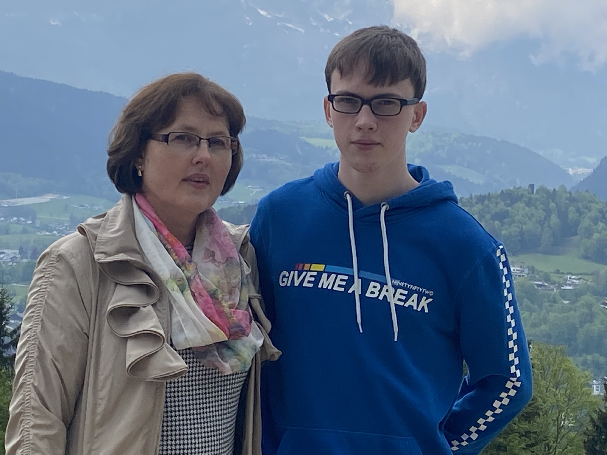

Natalja Tereschenko (* 17.12.1973 in Павлодар, Казахстан als Наташа Булатова) ist eine freundliche und sympatische Mutter von 3 lieben Kindern.

Mama (links) mit ihrem Sohn Michael (rechts) am 08.05.2022